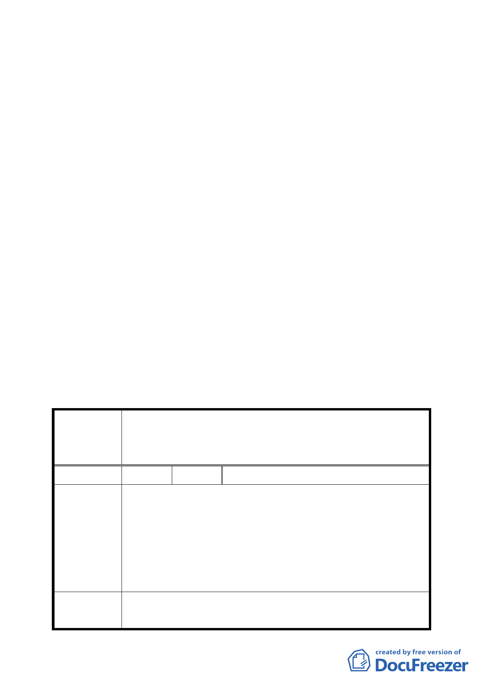

業區為第三種商業區（特）細部計畫案
說明：
一、市府以 94 年 7 月 20 日府都規字第 09413560203 號函送到
會，並自 94 年 7 月 21 日起公開展覽 30 天。
二、法令依據：都市計畫法第 24 條。
三、申請單位：財團法人臺灣基督長老教會大稻埕教會。
四、計畫範圍：臺北市大同區延平段一小段 320、320-1、320-2
等三筆地號。
五、變更理由及內容：詳計畫書。
六、公民或團體所提意見：計一件。
結論：
一、本案建築增建部分與古蹟將結合一體使用，基於古蹟再利
用立場，同意照案通過。
二、公民或團體所提意見審決如后附綜理表。
臺北市都市計畫委員會公民或團體所提意見綜理表
變更臺北市大同區延平段一小段 320、320-1、320-2
案 名 等 3 筆地號（臺灣基督長老教會大稻埕教會）土地第
三種商業區為第三種商業區（特）細部計畫案
編 號 １ 陳情人 柯寬容先生
本案為保存古蹟而須排除之法令限制除「『臺北市土地
使用管制規則』之高度比限制」外，應尚有「『建築技
術規則』之建築物高度限制」，故有關計畫書第 5 頁之
建 議 辦 法 「變更計畫內容」，建請加入「不受『建築技術規則建
築設計施工篇第 164 條』實施容積管制地區建築高度
限制」，以臻完備。
委 員 會 議 本案是否排除建築技術規則或建築法相關規定等議
決 議 題，則於申請建築開發時，由工務局建築管理處依權
三